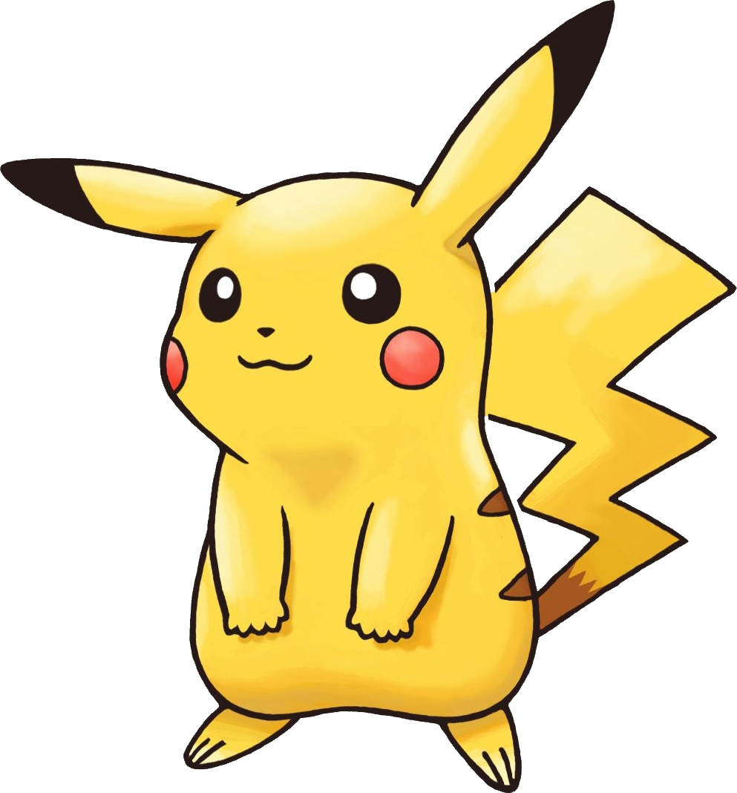
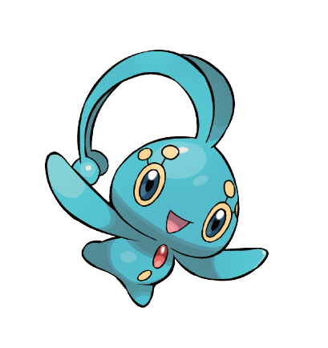

Mes Pokémons favoris
|  |
PikachuPikachu est une espèce de Pokémon, une créature de fiction issue de la franchise médiatique Pokémon de Nintendo. Il est apparu la première fois au Japon en 1996, dans les jeux vidéo Pokémon Vert et Rouge. |

|
DedenneIl utilise sa queue pour pomper l'énergie des centrales électriques ou pour se brancher sur les prises des maisons. Ses moustaches envoient des décharges. |
|  |
Phione et ManaphyTous deux considérés comme des Pokémon légendaires, ils ont pour particularité de ne pas être l'évolution l'un de l'autre : en effet, bien que Phione soit issu d'un œuf de Manaphy, il ne peut évoluer en Manaphy. |